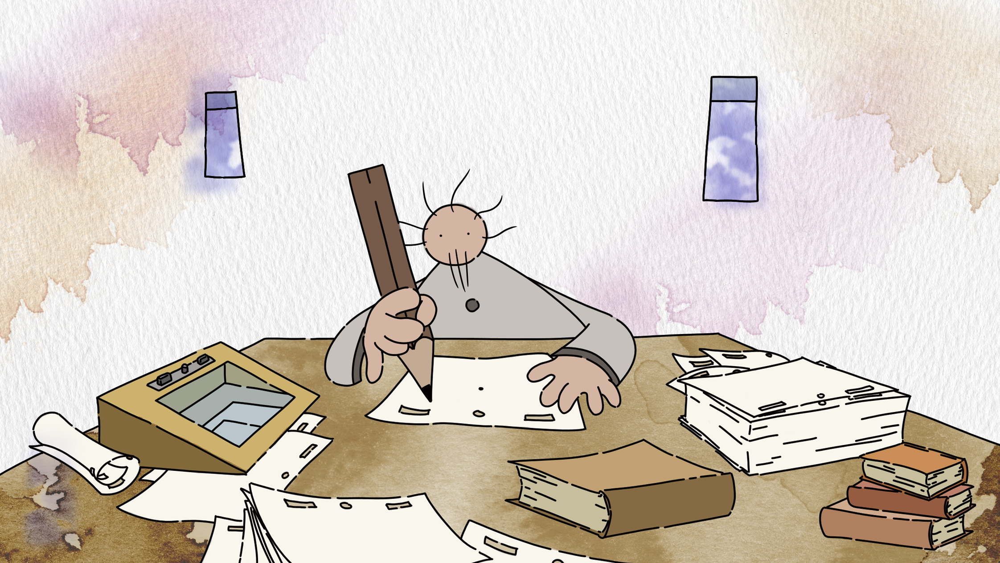
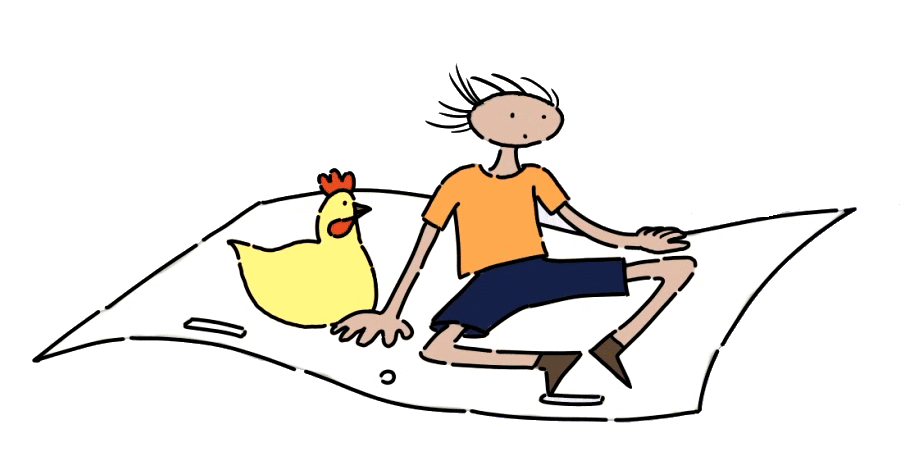

Minhas queridas crianças e adultos com menos de 120 anos de
idade, peço licença a todos para contar um pouco da minha vida.
Vocês vão ver que nasci há muito tempo atrás, mas somente agora tive a
oportunidade de participar dessa produção.
Meus olhos não são expressivos e tampouco minha boca mexe quando eu
falo. Na verdade, o problema é que penso bastante, como todo mundo faz.
O meu corpo é construído com algumas esferas, conforme vocês podem
ver. Tenho poucos movimentos dos braços e minha ação depende também dos
outros personagens que criei para me ajudar a contar uma história.
A minha vida mudou muito depois de me tornar um desenho animado.
Agradeço o aval da Ordem dos Poetas da Língua Portuguesa, sem o qual
este filme não encontraria o sentido e dimensão que julgo ter.
Particularmente, agradeço ao seu presidente, o Sr. Luís de Camões, com o
qual compartilhei também uma grande amizade.
Confesso que não sabia exatamente o que estava fazendo. Achei alguns
instrumentos naquela minha caminhada e fiz o que um simples desenho
animado poderia fazer naquelas condições. Entretanto, um filme nunca
termina, falta ainda muito para contar. É bem provável que, nos próximos
meses, vocês possam compartilhar de uma outra história, que começa
como todas as outras histórias: Era Uma Vez…!
Crianças de língua portuguesa e crianças dos demais idiomas falados
no mundo inteiro, saibam que esse filme é dedicado a vocês, por
muitas razões, algumas das quais gostaria de destacar.

A primeira, por eu ter sido criança também, muito de minha infância
está registrado nesse filme. Depois, eu compreendi que crescer é
transmitir o conhecimento para quem está crescendo e, então, fui
fazendo a minha história.
A segunda, foi por vocês por terem soprado na hora certa. Queria ter o
tempo de vida necessário para fazer um outro filme e dedicá-lo
novamente a vocês.
Nessa minha caminhada, fiz amizade com milhares de crianças de Norte a
Sul deste País, ensinei um pouco e aprendi muito com elas.
As crianças ricas me disseram que a maior riqueza é a amizade.
As crianças pobres me disseram para acrescentar a generosidade e que é preciso compartilhar tudo o que se traz no coração.
As crianças índias me ensinaram que a dignidade é o maior valor da humanidade.
As crianças negras me ensinaram que a origem de toda a humanidade
está na tez de sua pele e que não há razão para tanto preconceito.
As crianças com deficiência me ensinaram que o verbo mais difícil da
língua portuguesa é o verbo “transpor”, pois subir uma montanha é tão
difícil quanto descer.
As crianças doentes me ensinaram que a tristeza e o sofrimento, assim como a alegria e o prazer, fazem parte da natureza humana.
As crianças órfãs murmuraram no meu ouvido que os verdadeiros pais
morrem não apenas pelos seus filhos, mas por todas as crianças.
E assim foi a minha caminhada…
Bom, crianças, não vou mais incomodá-las.
Mas acredito que a felicidade voltará a reinar sobre a face da Terra e, por isso, eu e meus personagens contamos esta história.